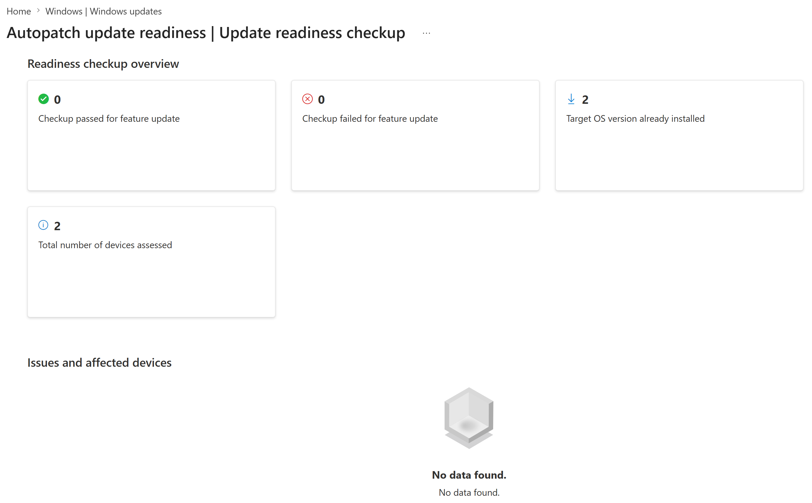
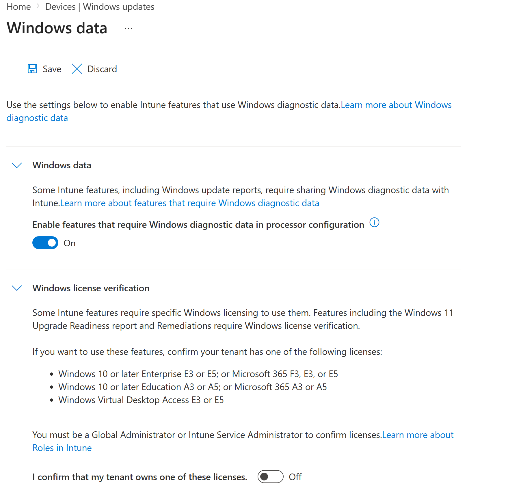
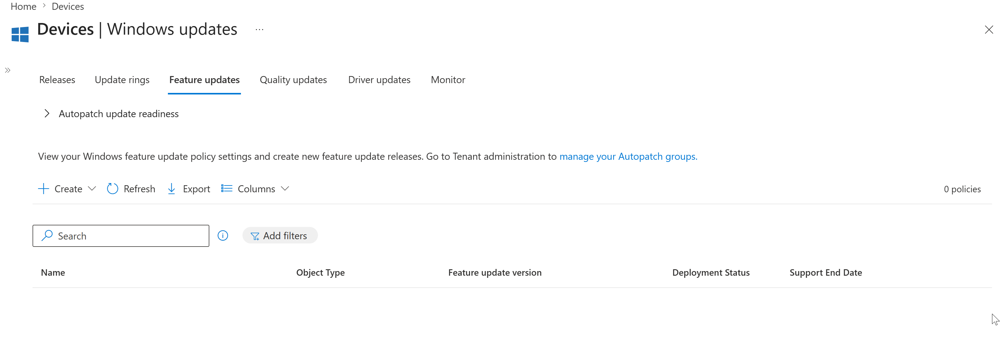
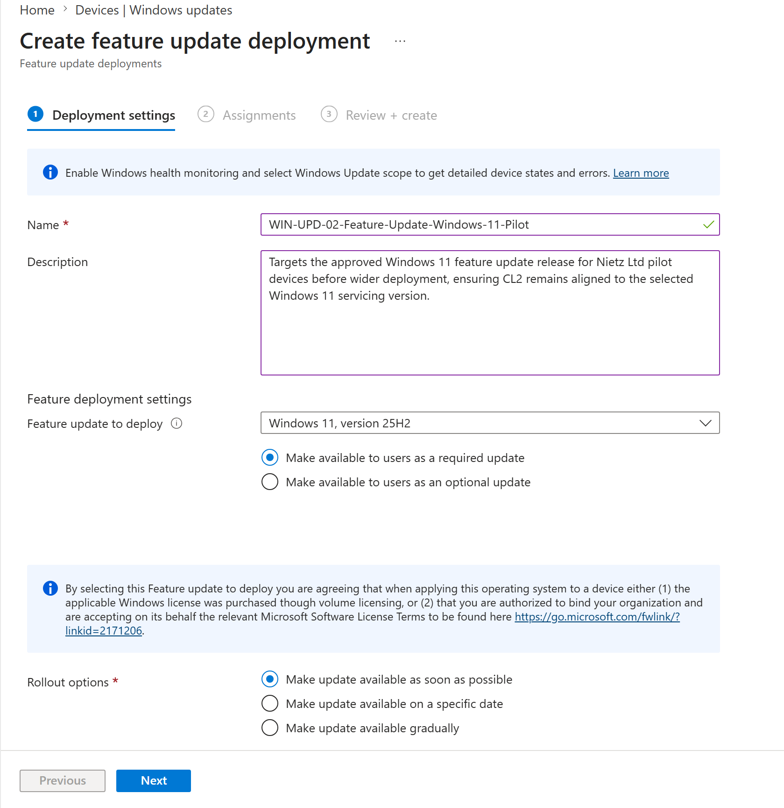
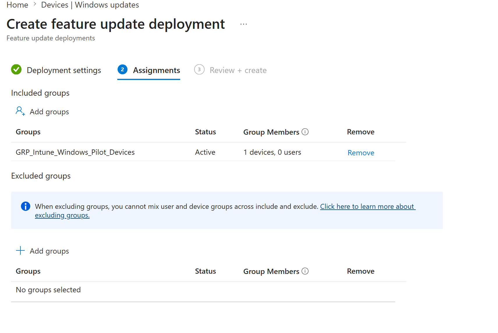
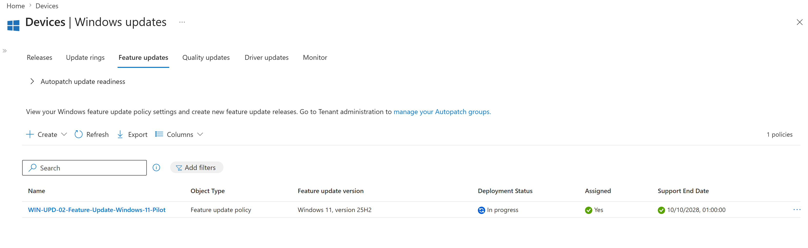
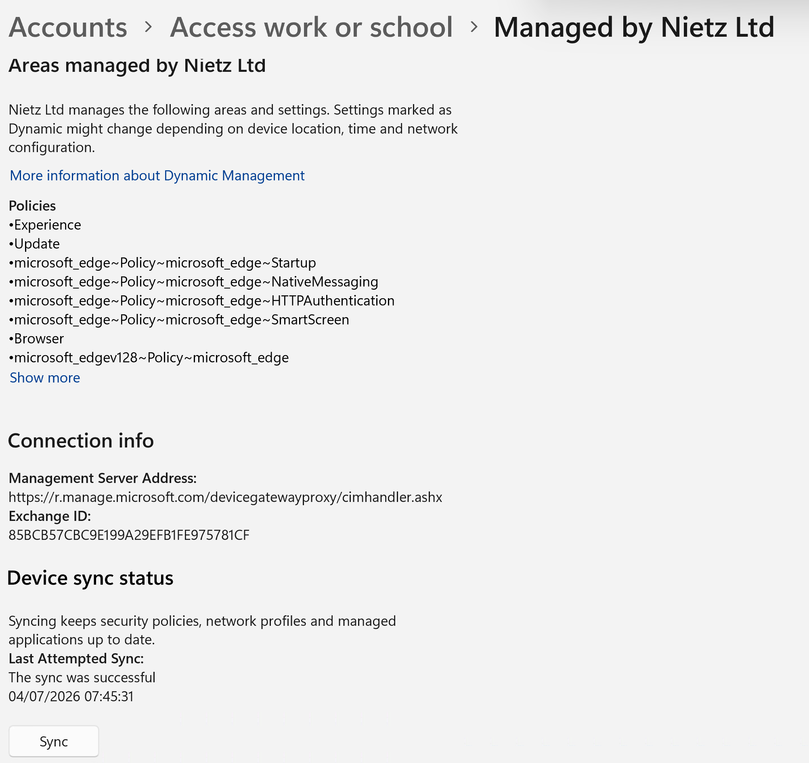
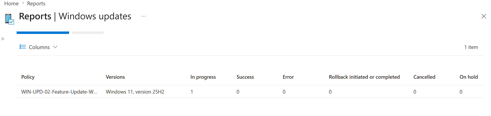

Lab 25: Feature Update Policy Windows 11
Configured a Windows 11 feature-update policy for the Intune pilot device group with readiness checks, reporting prerequisites, device-based assignment and validation ahead of wider rollout.
Overview
This lab continued the MD-102 endpoint-management build by separating Windows feature update targeting from the update ring behaviour configured in Lab 24. The update ring controls update experience and deferral behaviour; this lab controls the approved Windows feature release for the pilot device group.
The feature update policy targeted Windows 11, version 25H2 for the CL2 pilot device. The lab also captured readiness and reporting prerequisites so the feature update deployment could be tracked without forcing an operating system upgrade during the build.
Objective
The objective was to check Windows feature update readiness, enable Windows diagnostic data support for update reporting, create a Windows 11 feature update policy, assign it only to the Intune Windows pilot device group, sync CL2 and validate the deployment state through Windows Update reporting.
Environment
| Component | Value |
|---|---|
| Company | Nietz Ltd |
| Tenant admin | k.nietzold@nietz.co.uk |
| Management platform | Microsoft Intune |
| Policy type | Feature update deployment |
| Feature update policy | WIN-UPD-02-Feature-Update-Windows-11-Pilot |
| Target feature update | Windows 11, version 25H2 |
| Assigned group | GRP_Intune_Windows_Pilot_Devices |
| Pilot device | CL2 |
| Logged-in pilot user | c.bennett@nietz.co.uk |
| Previous lab | Lab 24: Windows Update Ring Pilot |
| Next planned lab | Lab 26: Quality Update Expedite and Reporting |
I first reviewed the Intune update readiness checkup to confirm the tenant had recent feature update readiness data. The readiness view showed two assessed devices, no failed feature update checkups and no listed affected-device issues, with the target operating system version already installed on the assessed devices.
I then enabled Windows diagnostic data support for Intune update reporting while leaving Windows license verification disabled because the lab tenant is using Business Premium rather than one of the listed Enterprise, Education or Microsoft 365 E3/E5 entitlements. After confirming the Feature updates area had no existing policy, I created WIN-UPD-02-Feature-Update-Windows-11-Pilot and targeted Windows 11, version 25H2 as a required update.
The policy was assigned only to GRP_Intune_Windows_Pilot_Devices, which contained the CL2 pilot device. CL2 was manually synced after assignment, and Windows Update reporting was used to confirm the policy appeared in reporting with one device in progress and no error, rollback, cancellation or on-hold status.
Configuration and Evidence
1. Feature Update Readiness Reviewed
I reviewed the Autopatch update readiness checkup before creating the Windows 11 feature update policy.

2. Windows Diagnostic Data Support Enabled
I enabled Windows diagnostic data support for Intune features that depend on detailed Windows Update reporting.

3. Feature Updates Area Reviewed Before Creation
I opened the Feature updates area in Intune before creating the pilot feature update policy.

4. Windows 11 Feature Update Policy Configured
I created WIN-UPD-02-Feature-Update-Windows-11-Pilot, selected Windows 11, version 25H2 and made the update available as a required update as soon as possible.

5. Pilot Device Group Assigned
I assigned the feature update policy to GRP_Intune_Windows_Pilot_Devices so the policy targeted the CL2 pilot device before any wider deployment.

6. Feature Update Policy Created
I confirmed that the feature update policy was created and visible in the Intune Feature updates list with the expected Windows 11 25H2 target, assignment status and deployment state.

7. CL2 Manually Synced
I manually synced CL2 from the Windows work or school account settings after assigning the feature update policy.

8. Feature Update Reporting Reviewed
I reviewed Windows Update reporting for the new feature update policy after assignment and device sync.

Validation
The lab was validated when readiness data showed assessed devices had no failed feature update checks, Windows diagnostic data support was enabled for reporting, the Windows 11 25H2 feature update policy existed in Intune, the policy was assigned only to the Windows pilot device group, CL2 was manually synced and Windows Update reporting showed one device in progress with no errors, rollback, cancellation or on-hold state.
Key Technical Outcomes
Nietz Ltd now has a dedicated Windows 11 25H2 feature update policy for the Intune Windows pilot device group. This provides controlled feature release targeting for CL2 and can be used as the model for future Windows feature update pilots before broader deployment.
Summary
- Reviewed feature update readiness before creating the policy.
- Enabled Windows diagnostic data support for Intune Windows Update reporting.
- Created
WIN-UPD-02-Feature-Update-Windows-11-Pilot. - Targeted
Windows 11, version 25H2as a required feature update. - Assigned the policy only to
GRP_Intune_Windows_Pilot_Devices. - Manually synced CL2 after assignment.
- Captured Windows Update reporting showing one device in progress with no reported errors.